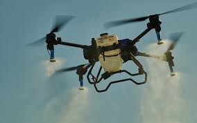

A agricultura e a pecuária são atividades essenciais para a produção de alimentos e o desenvolvimento econômico de um país. E, graças à tecnologia, esses setores têm se modernizado e se tornado cada vez mais eficientes. Um dos grandes avanços tecnológicos no campo é o uso de drones. Esses equipamentos são capazes de monitorar as plantações e os rebanhos, identificando problemas como pragas, doenças e animais doentes. Dessa forma, é possível agir de forma rápida e precisa, evitando perdas e garantindo a saúde dos cultivos e animais. Outra tecnologia que tem revolucionado a agricultura é a aplicação de fertilizantes e defensivos de forma precisa, por meio de sistemas de GPS. Com essa técnica, é possível economizar insumos, reduzir os impactos ambientais e aumentar a produtividade das lavouras. Além disso, a automação também tem sido uma aliada no campo. Máquinas agrícolas modernas realizam diversas tarefas, como o plantio, a colheita e a irrigação, de forma automatizada e eficiente. Isso reduz a necessidade de mão de obra manual e aumenta a produtividade das atividades no campo.
Um drone de pulverização custa cerca de R$98.000,00, e para ponhar os agrotoxicos em 50 alquitares custaria cerca de R$1250,00.
Ajudam no controle da população de plantas, detectando falhas consideráveis. Auxiliam assim, nas decisões de replantar, saber a quantidade de mudas a comprar e na tomada de ação. O replante das falhas pode evitar a queda da produtividade e otimizar o rendimento na mesma área. E o manejo mecanizado pode aumentar a perda da produtividade gerada pela falta de controle do tráfego na lavoura.
Para a contagem de plantas, a aeronave pode ser utilizada para sobrevoar a plantação, registrando imagens que são, posteriormente, processadas em um software. Os drones informam o número exato das culturas no campo, sendo possível analisar a eficiência do plantio e mensurar a colheita final. Esse sensoriamento remoto influencia diretamente no desempenho de uma lavoura. “Uma das coisas mais animadoras, é a habilidade de saber exatamente quantas plantas você possui em sua propriedade. Ao invés de confiar na contagem manual e em pequenas proporções de uma área, dessa forma, o produtor consegue economizar tempo em campo, mão-de-obra, além de gerar estimativas de produção para a safra.” Carlos e Hugo.
Algumas pragas transmitem agentes que causam doenças às plantas. As que atacam a parte aérea das plantas normalmente são mais fáceis de serem visualizadas. Pragas de hábito subterrâneo podem gerar danos e serem confundidas com deficiências nutricionais. São exemplos de pragas mais comuns: Lagarta-do-cartucho; Larva-alfinete; Cigarrinha-do-milho; Pragas de hábito subterrâneo; Pragas secundárias e ocasionais. Para essa identificação com os drones, o método ainda é pouco estudado, os sensores ainda não são muito precisos. A ideia é que, com o mapeamento de pragas e doenças gerado pelo drone, as imagens permitem que os produtores diferenciem as plantas saudáveis, as infectadas e como está sendo a proliferação da praga de forma eficaz.
O drone pode ser utilizado como pulverizador em locais onde se tem maior dificuldade de acesso, sem acarretar perdas por pisoteio. Etapas: O preparo da calda é realizado sempre da mesma forma; Os produtos podem ser colocados nos locais onde realmente são necessários; Economia dos produtos fitossanitários, otimizando nossa operação em campo. Benefícios Substituição dos trabalhadores pelo drone, o que acaba eliminando o risco de exposição de pessoas aos produtos utilizados; Controle do equipamento remotamente. Carlos Eduardo e Hugo destacam que “A utilização dos drones e softwares podem facilitar a vida dos produtores, conseguindo obter dados de forma mais rápida e mais precisa para a produtividade e o gerenciamento. Ainda apresenta uma grande dificuldade por causa do seu alto custo. Muitos produtores ainda ficam inseguros em investir nessas ferramentas, mas o mercado vem se desenvolvendo em grande escala, procurando ajudar cada vez mais os produtores a se tecnificar e conseguir obter sempre bons resultados. Com o incentivo de produtores que utilizam a técnica da agricultura de precisão, esses números só têm a crescer cada vez mais devido à facilidade para tomadas de decisões, inclusive com investimentos de forma mais direcionada e precisa.”
Em geral, os drones têm um custo inicial menor do que uma aeronave pequena. Os drones agrícolas As aeronaves de nível profissional podem variar de preço, mas geralmente são mais baratas em comparação com uma aeronave leve e os custos associados à sua manutenção e operação.
Aeronaves pequenas podem cobrir grandes áreas de terra em um único voo e transportar equipamentos mais pesados, como câmeras de alta resolução e sensores especializados. Se for necessário monitorar áreas muito grandes, é provável que uma aeronave seja mais eficiente em termos de tempo e cobertura.
Os dronessão mais ágeis e podem acessar áreas de difícil acesso, como áreas com terreno irregular ou plantações próximas. Se a fazenda tiver um terreno complicado ou áreas de difícil acesso, um dronepode ser mais adequado.
Os dronestêm custos operacionais mais baixos em comparação com as aeronaves. Os drones elétricos têm custos de energia mais baixos, enquanto os drones a combustível exigem menos combustível do que as aeronaves. Além disso, os drones não exigem um piloto a bordo, o que reduz os custos associados ao pessoal.
Os drones fornecem imagens de alta resolução e dados detalhados em nível de parcela, permitindo um monitoramento mais preciso e a detecção precoce de problemas nas culturas. Os aviões também podem fornecer informações valiosas, mas seu nível de detalhe pode ser menor em comparação com os drones(isso depende muito do tipo de câmera usada). Em resumo, a escolha entre um dronee uma aeronave para o campo dependerá das necessidades específicas de cada agricultor e das características do terreno e da superfície a ser coberta. Se for necessária uma cobertura rápida de grandes extensões de terra, uma aeronave pode ser mais adequada. No entanto, se for necessário acesso a terrenos complicados ou monitoramento detalhado e preciso, um dronepode oferecer uma melhor relação custo-benefício. É recomendável realizar uma análise detalhada das necessidades e considerar os custos iniciais, operacionais e de manutenção antes de tomar uma decisão.